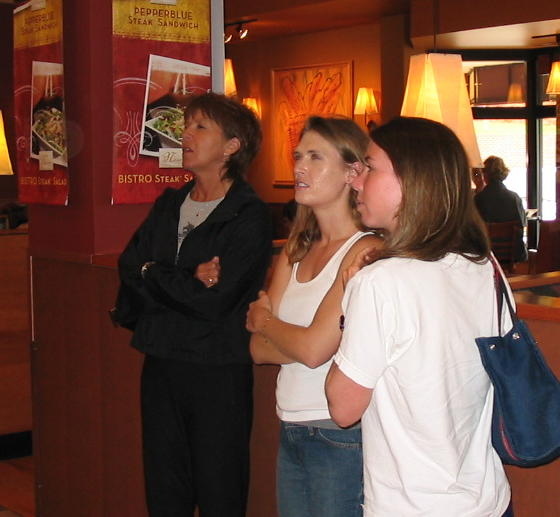
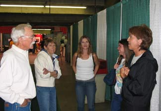
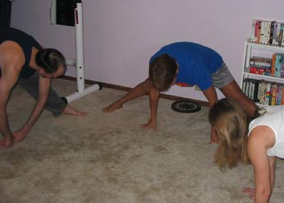
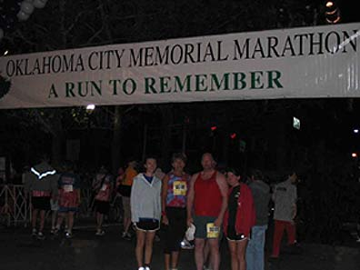
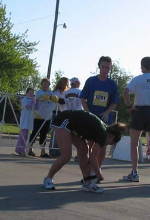
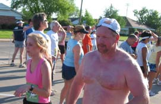
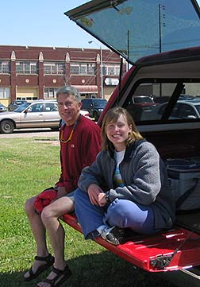
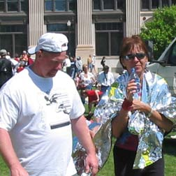

April 25, 2004
| My Mom and her cult of running friends came to
town for the OKC Memorial Marathon. The race is to commemorate the
anniversary of the bombing of the Federal Building. Mom feels a
special bond to this race because she had been taking a group of school
kids to OKC on the day of the bombing and she has run the race every year
that they've had it. We had our friend Nathan Blythe in that weekend
and Mom brought her friends John Gregory, Mary Barnett, and Tammy.
Mom's knee was injured with a torn meniscus and she shouldn't have been
running, but she was way too stubborn (and tough) for that. |
|
 |
 |
| Here we are at Panera Bread for lunch | At the runner's Expo with Mom's friends Grace & David McCoy |
 |
 |
| Mom leads us in a round of yoga the night before the race | Here we are EARLY the next morning at the starting line |
 |
 |
| At the half-way point - Mary taking over for Tammy | Here comes Jon! |
|
 |
I ran into friends Jeff and Braden who entertained me while we waited for Mom to come to the finish line. |
|
Here they are afterward. Mom has a big
bag |
 |